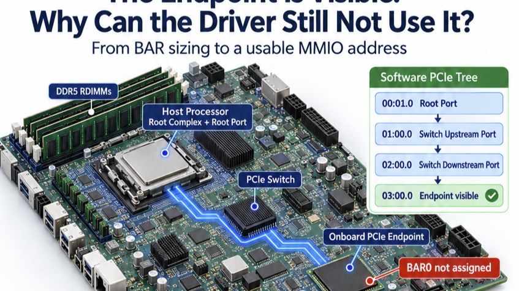
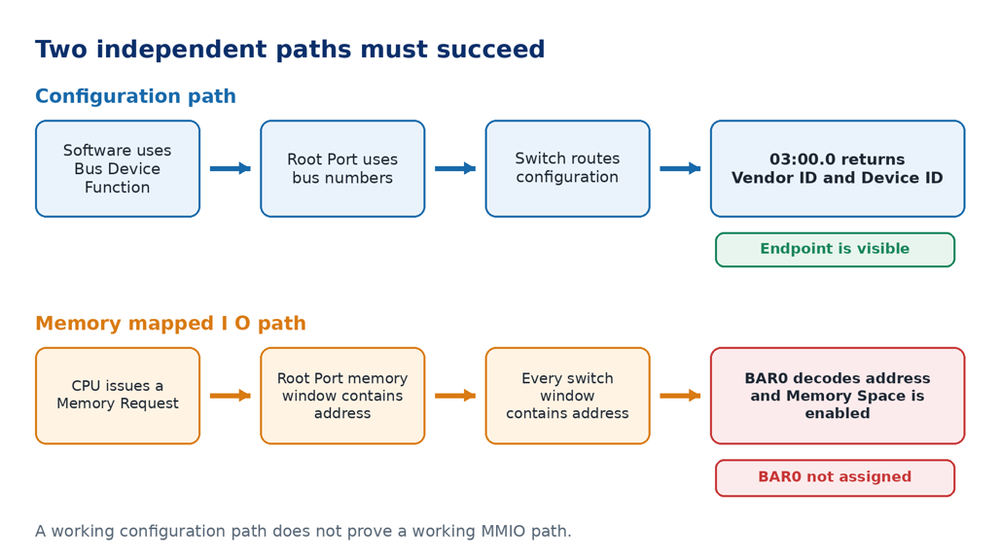
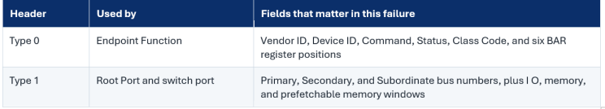
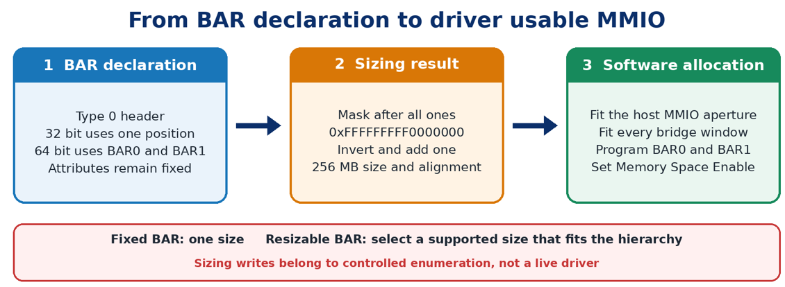
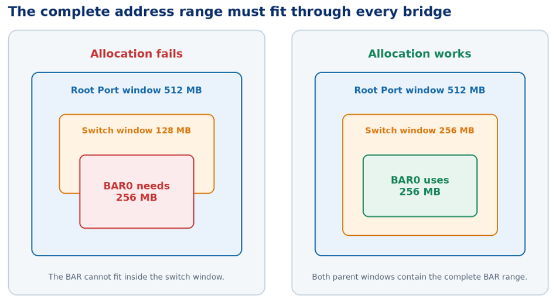
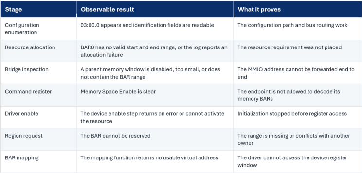

Originally published on LinkedIn. View original article ↗

The x16 link is in L0. DLL Active is set. Configuration reads return valid data. The endpoint appears in the software tree as 03:00.0, and the operating system can read its Vendor ID, Device ID, Class Code, and capabilities. The driver matches the Function, but initialization stops before the first device register access. BAR0 has no assigned address.
If software can see the Function, why can the driver still not use it?
Configuration visibility and MMIO usability are different milestones. Visibility proves that configuration traffic can reach the Function, while MMIO also requires valid BAR assignment, sufficient Type 1 bridge windows, and Memory Space Enable. Debug these resources and the driver failure point before returning to LTSSM, equalization, or lane margining.
Visibility and usability use different routing information
Software first selects a PCI segment, then identifies a Function by Bus, Device, and Function. The host bridge issues a Configuration Request inside that segment. The Root Port and each bridge use their bus number registers to decide whether the request belongs below them. This is how software reaches 03:00.0 before any normal device register address exists.
A Memory Request is different. It carries an address. Each bridge decides whether that address falls inside one of its enabled memory windows. At the endpoint, a BAR must claim the address, and the Command register must allow Memory Space decoding. If any one of these checks fails, the request does not reach a usable register block.

Type 0 and Type 1 Headers
Before looking at BAR assignment, it helps to place the two configuration header types in the real topology. A normal endpoint Function uses a Type 0 header. A Root Port and a PCIe switch port behave as bridge Functions and use a Type 1 header.
The Root Complex is the host side PCIe logic inside the processor or SoC. A Root Port is the bridge Function at the edge of that Root Complex. They are related blocks, not two separate cards on the motherboard.

The endpoint BARs and the bridge windows do different jobs. A BAR tells the endpoint which addresses range belongs to one of its resources. A bridge window tells a bridge which addresses range must be forwarded downstream. The complete path needs both.
BAR meaning, sizing, and selection
A BAR describes an address window in endpoint Type 0 configuration space, not the storage behind it. A 32-bit memory BAR uses one of the six BAR positions, while a 64-bit BAR uses an adjacent pair, and the upper position is part of the same resource.
During enumeration, firmware or the operating system disables Memory Space decoding, writes all ones, reads the implemented address mask, calculates the power of two size and alignment, restores the BAR, and allocates an address through every parent bridge window. BAR0 value 0xF000000C with BAR1 value 0xFFFFFFFF forms mask 0xFFFFFFFFF0000000, which describes a 256 MB, 64-bit, prefetchable resource.

A fixed BAR supports one size. Resizable BAR offers several supported sizes, but software can select only a size that fits the complete hierarchy; the prefetchable attribute also does not by itself make the range normal cacheable memory.
Never size a live BAR by hand: For a 16 MB BAR0 assigned at 0x80000000, writing all ones while Memory Space Enable remains set can move the decode to 0xFF000000 while the driver still uses the old address. Read the operating system resource record instead and use controlled device removal and rescan or reboot if sizing must be repeated.
Choosing a 32-bit or 64-bit address
Modern AI servers may contain several accelerators, DPUs, PCIe switches, and many virtual Functions. Each device can request significant MMIO space. The challenge is therefore not only assigning one BAR but fitting every BAR into the complete system address map.
A 32-bit Memory BAR can encode only a PCI bus address below 4 GB. A 64-bit Memory BAR may be assigned below or above 4 GB, but its complete range must fit inside the host bridge window and every Type 1 bridge window along the path. A 64-bit CPU alone does not guarantee that this space is available.
Server firmware often provides an option called Above 4G Decoding or MMIO Above 4 GB. Enabling it allows large 64-bit BARs to be placed above 4 GB. It does not resize the BAR, change DMA address capability, or remove the need for bridge windows. Resizable BAR is separate and allows software to select one of the BAR sizes supported by the endpoint.
Bridge windows make the address reachable
The allocator cannot program only the endpoint BAR. It must also program every Type 1 Function between the Root Complex and the endpoint. Each relevant window uses a base and a limit. The endpoint BAR range must sit completely inside the window at every level.
In the example topology, the path is Root Port 00:01.0, Switch Upstream Port 01:00.0, Switch Downstream Port 02:00.0, and Endpoint 03:00.0. The BAR can be reached only if the Root Port and both switch bridge Functions forward the complete range.
Suppose BAR0 and BAR1 form a 256 MB resource, but the available downstream switch window is only 128 MB and cannot be enlarged because the adjacent range is already reserved. The Function still answers configuration requests. The resource allocator, however, has no valid end to end path for the BAR and may leave BAR0 unassigned.

Memory Space Enable is the final endpoint gate
The Command register in the Type 0 header contains Memory Space Enable. When this bit is clear, the Function must not respond to Memory Requests through its BARs. Enumeration software normally keeps this bit clear while it probes and moves resources. It enables memory decoding only after the BAR values and the forwarding path are valid.
A programmed BAR with Memory Space Enable clear is still not usable. The opposite is also unsafe: enabling memory decoding before the address hierarchy is valid can expose a wrong or conflicting range. Always inspect the BAR, the windows, and the Command register as one set.
What the operating system and driver observe
Linux is a useful example because it exposes each boundary clearly. The same architectural boundaries exist in other operating systems.

A Linux driver generally enables the device, requests ownership of its MMIO region, and then maps the BAR. Functions such as pci_enable_device_mem, pci_request_region, and pci_iomap expose these steps. Every return value matters. A driver should also use the resource information maintained by the PCI core, because the host physical address may differ from the raw PCI bus address on some architectures.
configuration visible → resource assigned → region reserved → BAR mapped → register access
A practical debug sequence
Use the failure boundary to avoid mixing link debug, resource debug, and driver debug. I normally walk the following sequence.
1. Freeze the evidence. Save the topology, boot log, configuration space, and resource map before changing firmware settings.
2. Confirm that 03:00.0 is consistently readable. Check Vendor ID and Device ID more than once. This separates a stable configuration path from an intermittent link problem.
3. Inspect the operating system resource record for every endpoint BAR. Record type, size, start, end, and flags. Do not rely only on the device name in the tree.
4. Validate the BAR declaration from an early enumeration trace or trusted firmware log. Confirm 32 bit or 64 bit type, pairing, attribute, size, and required alignment.
5. Check the host bridge MMIO budget. Confirm that the platform exposes enough address space below 4 GB or above 4 GB for this resource.
6. Walk upward from 03:00.0. For each switch port and the Root Port, compare the BAR range with the correct Type 1 memory window. One missing parent is enough to break the path.
7. Read the endpoint Command register. Memory Space Enable should be set only after the range is valid. If it is clear, find out whether allocation failed earlier.
8. Follow the driver in order. Identify whether it fails during device enable, region reservation, BAR mapping, or the first register read. These failures point to different owners.
9. Use a protocol analyzer only after the software path is understood. If software never created a usable mapping, no valid Memory Request may be emitted for the endpoint registers.
Common conclusions that waste debug time
- L0 means the device is ready. L0 proves link operation. It does not prove BAR assignment or driver mapping.
- A 64 bit BAR must be above 4 GB. It may be placed below 4 GB when a suitable range exists.
- A 64 bit processor always has enough MMIO space. The host bridge windows and reserved platform regions still limit allocation.
- A zero BAR value means the BAR is absent. The implemented size mask, not the initial base value alone, decides this.
- Prefetchable means normal cached memory. It is a PCI resource attribute and is not a complete CPU mapping policy.
- Resetting the endpoint will repair an address conflict. A reset can clear programming, but it cannot create missing address space or enlarge a bridge window.
Have you seen a PCIe Endpoint appear in the software tree but remain unusable because of BAR allocation or bridge window limits?